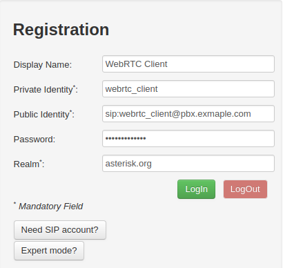
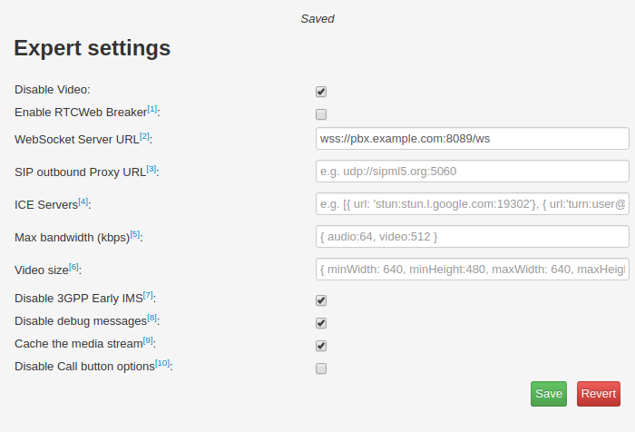
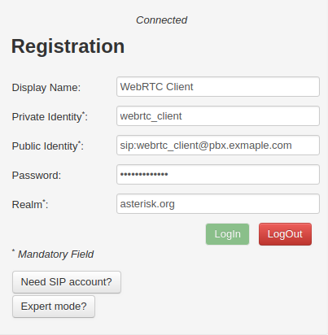
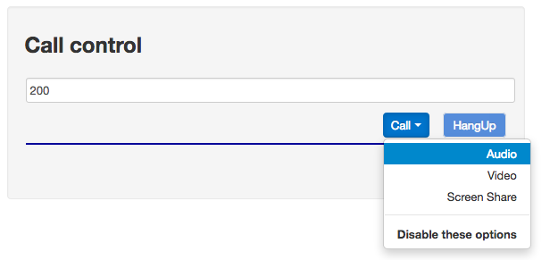
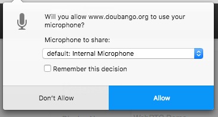
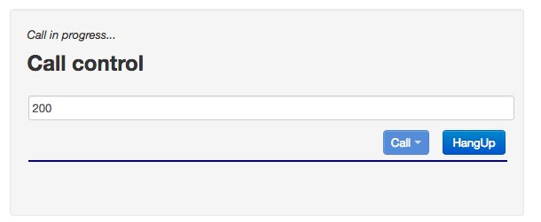
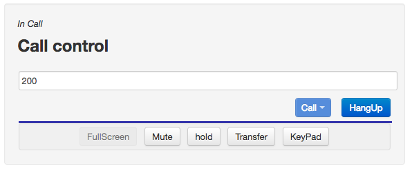

Setup Asterisk
Follow the instructions at Configuring Asterisk for WebRTC Clients before proceeding, The rest of this tutorial assumes that your PBX is reachable at pbx.example.com and that the client is known as webrtc_client.
Configure Asterisk Dialplan
We'll make a simple dialplan for receiving a test call from the sipml5 client.
[default] exten => 200,1,Answer() same => n,Playback(demo-congrats) same => n,Hangup()
This instructs Asterisk to Answer a call to "200," to play a file named "demo-congrats" (included in Asterisk's core sound file packages), and to hang up. To make the extension active, either restart Asterisk or issue a "dialplan reload" command from the Asterisk CLI.
Browsers and WSS
When using WSS as a transport, Chrome and Firefox will not allow you, by default, to connect using WSS to a server with a self-signed certificate. Rather, you'll have to install a publicly-signed certificate into Asterisk. Or, you'll have to import the the self-signed certificate we made earlier into your browser's keychain, which is outside the scope of this Wiki.
Or, for Firefox and Chrome, you can open a separate browser tab and point it to Asterisk's HTTPs server's TLS port and WS path, e.g. https://pbx.example.com:8089/ws, and you can manually confirm the security exception.
Configure SIPML5
Next, visit https://sipml5.org - you'll be redirected to https://www.doubango.org/sipml5/
Once there, click the "Enjoy our live demo" link to be directed to the sipml5 client.
In the Registration box, use configuration similar to the following:

Here, we have input the following:
- Display Name is a free-form string
- Private Identity is our username from our PJSIP auth object
- Public Identity is in the format:
- sip : (name of our PJSIP aor object) @ (IP Address of the Asterisk system)
- Password is our password from our PJSIP auth object
- Realm is "asterisk.org"
Next, click the "Expert mode?" form button. It will open a new browser tab. In the Expert settings box, use a configuration similar to the following:

Here, we have made the following changes:
- Checked the "Disable Video" box
- Filled in the WebSocket Server URL using the format:
- wss : // (ip address of asterisk) : 8089 / ws
- Checked the "Disable 3GPP Early IMS" box
Click "Save" and return to the other demo tab with the Registration box.
Next, click "Login" and you should see Connected as such:

You should see a corresponding connection happen on the Asterisk CLI. You can log into the Asterisk CLI by performing:
# asterisk -vvvr
Then, you can LogOut and Login and see something like:
== WebSocket connection from '192.168.147.245:49976' for protocol 'sip' accepted using version '13' -- Added contact 'sips:webrtc_client@192.168.147.245:49976;transport=ws;rtcweb-breaker=no' to AOR 'webrtc_client' with expiration of 200 seconds == Endpoint webrtc_client is now Reachable
Make a test call
In the sipml5 Call control box input 200. Then press the Call button. You'll see a drop-down:

Select "Audio" to continue. Once you do this, Firefox will display a popup asking permission to use your microphone:

Click "Allow."
Next, the Call control box will indicate that the call is proceeding:

Finally, when the call is connected, you will see In Call:

and you will hear "Congratulations, you have successfully installed and executed the Asterisk open source PBX..."
You've just made your first call via WebRTC using Asterisk!
{kind=link}
{kind=link}
{kind=link}
{kind=link}
{kind=link}
{kind=link}
{kind=link}
{kind=link}
{kind=link}
{kind=link}
{kind=link}
{kind=link}
{kind=link}
{kind=link}